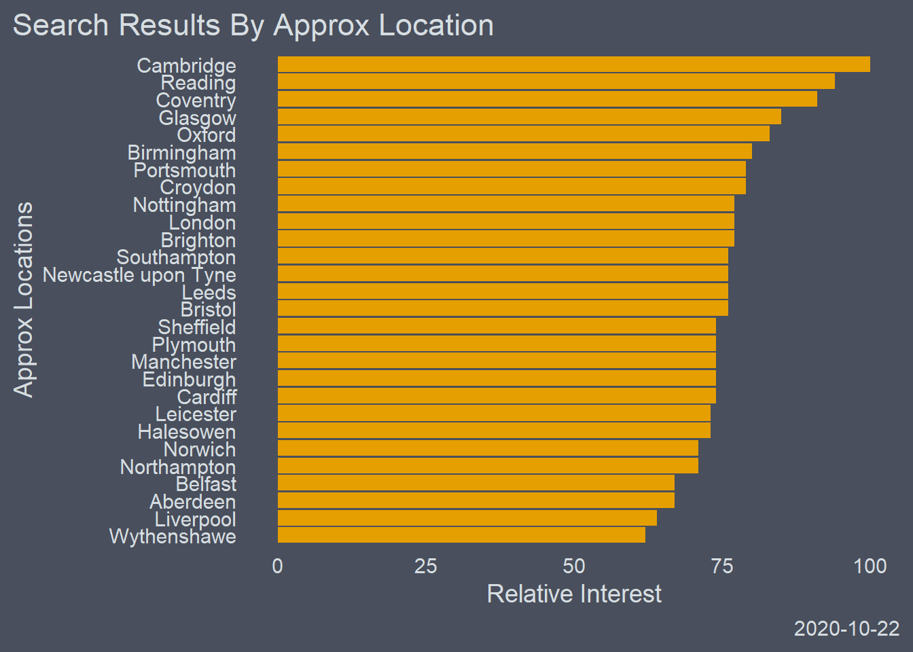
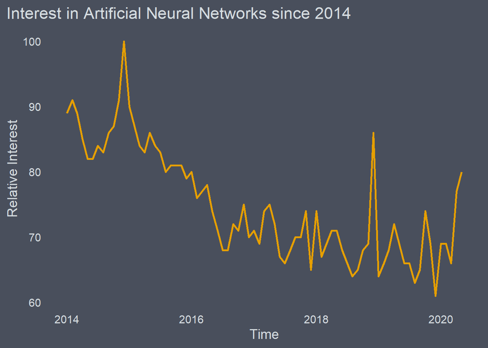
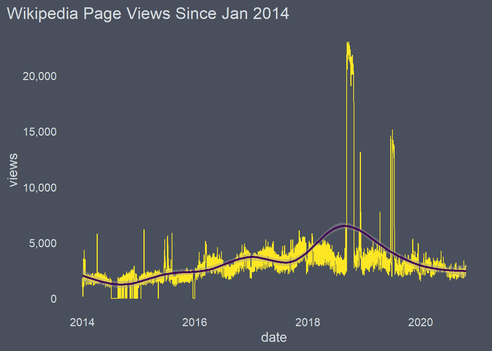
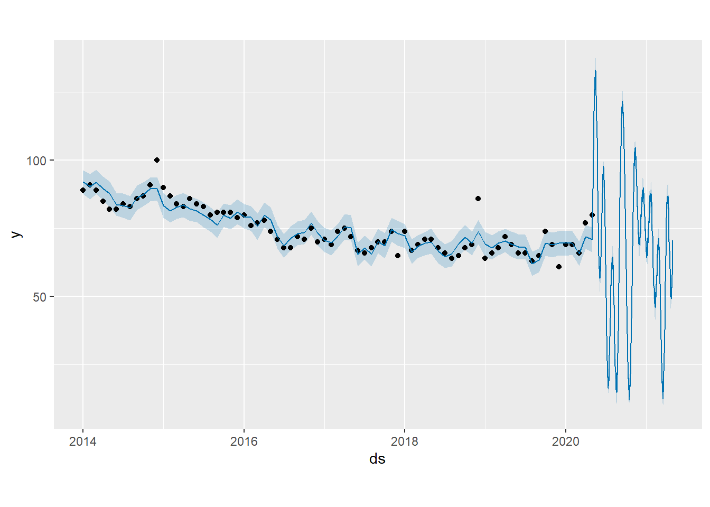
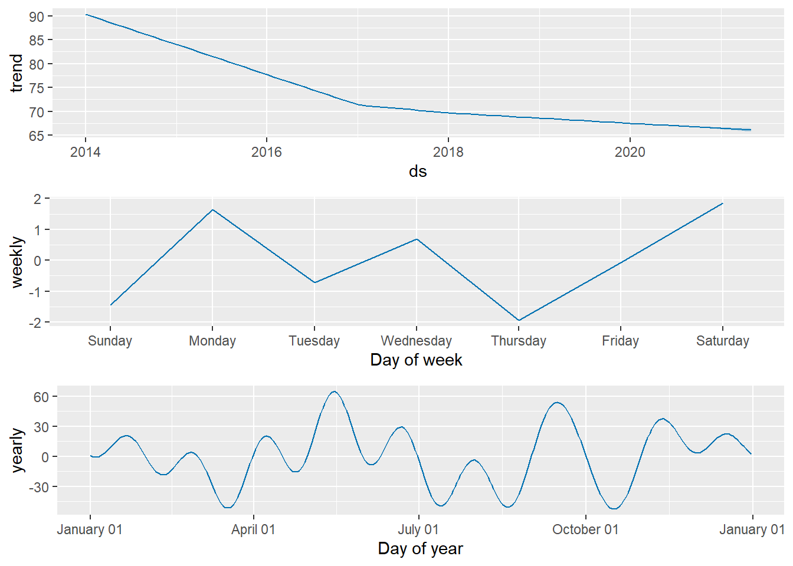

Internet Search Volume: A Proxy
Introduction
Internet search volume and web page hits can provide interesting insights into the collective unconscious (read the minds of bored 20 - somethings on furlough)
This is nice quick introduction to two straight forward packages, googletrendsR and wikipediatrend.
There will also be a cursory flirt with Facebook’s Prophet, a forecasting package.
So lets call in our libraries
#~~~~~~~~~~~~~~~~~~~~~~~~~~~~~~~~~~~~~~~~
options(scipen = 999)
library(gtrendsR)
library(tidyverse)
library(ggcharts)
library(ggsci)
library(ggthemes)
Google Trends
The query requires a few different arguments which we can define before hand.
The + between the terms in the keyword vector ensures that those words appear in that order.
#define the keywords
keywords <- c('Artificial+neural+network')
# Choose Location --------------------------------------------------------
country=c('GB')
# Define Time Fram -------------------------------------------------
time_frame = ("2014-01-01 2020-05-30")
#set channels
channel='web'
Here we have the final query, which will return us a list of dataframes
trends <- gtrends(keywords, gprop = channel, geo = 'GB', time = time_frame )
str(trends)
## List of 7
## $ interest_over_time :'data.frame': 77 obs. of 7 variables:
## ..$ date : POSIXct[1:77], format: "2014-01-01" "2014-02-01" ...
## ..$ hits : int [1:77] 89 91 89 85 82 82 84 83 86 87 ...
## ..$ keyword : chr [1:77] "Artificial+neural+network" "Artificial+neural+network" "Artificial+neural+network" "Artificial+neural+network" ...
## ..$ geo : chr [1:77] "GB" "GB" "GB" "GB" ...
## ..$ time : chr [1:77] "2014-01-01 2020-05-30" "2014-01-01 2020-05-30" "2014-01-01 2020-05-30" "2014-01-01 2020-05-30" ...
## ..$ gprop : chr [1:77] "web" "web" "web" "web" ...
## ..$ category: int [1:77] 0 0 0 0 0 0 0 0 0 0 ...
## $ interest_by_country: NULL
## $ interest_by_region :'data.frame': 4 obs. of 5 variables:
## ..$ location: chr [1:4] "England" "Scotland" "Wales" "Northern Ireland"
## ..$ hits : int [1:4] 100 96 91 78
## ..$ keyword : Factor w/ 1 level "Artificial + neural + network": 1 1 1 1
## ..$ geo : chr [1:4] "GB" "GB" "GB" "GB"
## ..$ gprop : chr [1:4] "web" "web" "web" "web"
## $ interest_by_dma : NULL
## $ interest_by_city :'data.frame': 97 obs. of 5 variables:
## ..$ location: chr [1:97] "Milton Keynes" "Cambridge" "Reading" "Warrington" ...
## ..$ hits : int [1:97] NA 100 94 NA NA 91 NA NA NA NA ...
## ..$ keyword : Factor w/ 1 level "Artificial + neural + network": 1 1 1 1 1 1 1 1 1 1 ...
## ..$ geo : chr [1:97] "GB" "GB" "GB" "GB" ...
## ..$ gprop : chr [1:97] "web" "web" "web" "web" ...
## $ related_topics :'data.frame': 44 obs. of 6 variables:
## ..$ subject : chr [1:44] "100" "21" "21" "11" ...
## ..$ related_topics: chr [1:44] "top" "top" "top" "top" ...
## ..$ value : chr [1:44] "Computer network" "Network Rail" "Rail transport" "Artificial turf" ...
## ..$ geo : chr [1:44] "GB" "GB" "GB" "GB" ...
## ..$ keyword : chr [1:44] "Artificial+neural+network" "Artificial+neural+network" "Artificial+neural+network" "Artificial+neural+network" ...
## ..$ category : int [1:44] 0 0 0 0 0 0 0 0 0 0 ...
## ..- attr(*, "reshapeLong")=List of 4
## .. ..$ varying:List of 1
## .. .. ..$ value: chr "top"
## .. .. ..- attr(*, "v.names")= chr "value"
## .. .. ..- attr(*, "times")= chr "top"
## .. ..$ v.names: chr "value"
## .. ..$ idvar : chr "id"
## .. ..$ timevar: chr "related_topics"
## $ related_queries :'data.frame': 50 obs. of 6 variables:
## ..$ subject : chr [1:50] "100" "48" "31" "31" ...
## ..$ related_queries: chr [1:50] "top" "top" "top" "top" ...
## ..$ value : chr [1:50] "network rail" "artificial grass" "cartoon network" "cartoon" ...
## ..$ geo : chr [1:50] "GB" "GB" "GB" "GB" ...
## ..$ keyword : chr [1:50] "Artificial+neural+network" "Artificial+neural+network" "Artificial+neural+network" "Artificial+neural+network" ...
## ..$ category : int [1:50] 0 0 0 0 0 0 0 0 0 0 ...
## ..- attr(*, "reshapeLong")=List of 4
## .. ..$ varying:List of 1
## .. .. ..$ value: chr "top"
## .. .. ..- attr(*, "v.names")= chr "value"
## .. .. ..- attr(*, "times")= chr "top"
## .. ..$ v.names: chr "value"
## .. ..$ idvar : chr "id"
## .. ..$ timevar: chr "related_queries"
## - attr(*, "class")= chr [1:2] "gtrends" "list"
We can access the elements of the list we would like and assign them to a variable. I have creatively named them as seen below.
The city data seems quite suspect to me and is undoubtedly a case of search locations being grouped to the nearest ‘city’
time_trend <- trends$interest_over_time
city <- trends$interest_by_city
Process and plot
# A little bit of cleaning ------------------------------------------------
library(forcats)
city <- na.omit(city)
# Lets take a look --------------------------------------------------------
ggplot(city, aes( reorder(location, hits), hits)) +
geom_col(fill ="#E69F00", show.legend = FALSE) +
coord_flip() +
labs(title = 'Search Results By Approx Location',
y = 'Relative Interest',
x ='Approx Locations',
caption = Sys.Date()) +
theme_hermit()

# CAUTION: This step is only undertaken to ensure better plotting --------
time_trend$hits[time_trend$hits == '<1'] <- 0
time_trend$hits <- as.numeric(time_trend$hits)
glimpse(time_trend)
## Rows: 77
## Columns: 7
## $ date <dttm> 2014-01-01, 2014-02-01, 2014-03-01, 2014-04-01, 2014-05-0...
## $ hits <dbl> 89, 91, 89, 85, 82, 82, 84, 83, 86, 87, 91, 100, 90, 87, 8...
## $ keyword <chr> "Artificial+neural+network", "Artificial+neural+network", ...
## $ geo <chr> "GB", "GB", "GB", "GB", "GB", "GB", "GB", "GB", "GB", "GB"...
## $ time <chr> "2014-01-01 2020-05-30", "2014-01-01 2020-05-30", "2014-01...
## $ gprop <chr> "web", "web", "web", "web", "web", "web", "web", "web", "w...
## $ category <int> 0, 0, 0, 0, 0, 0, 0, 0, 0, 0, 0, 0, 0, 0, 0, 0, 0, 0, 0, 0...
ggplot(time_trend, aes(x=date, y=hits,group=keyword,col=keyword))+
geom_line(size=1,col ="#E69F00")+
xlab('Time')+
ylab('Relative Interest')+
theme_hermit()+
theme(legend.title = element_blank(),legend.position="right",legend.text=element_text(size=12))+
ggtitle('Interest in Artificial Neural Networks since 2014') +
scale_color_viridis_d()

Lets do something similar this time in Wikipedia
Using Wikipedia Trend
The first thing we will do is create the query. Note that you will have to ensure that the wikipedia you want exists and that you have written it as it appears in actual URL.
library(wikipediatrend)
## Warning: package 'wikipediatrend' was built under R version 3.6.3
##
## [wikipediatrend]
##
## Note:
##
## - Data before 2016-01-01
## * is provided by petermeissner.de and
## * was prepared in a project commissioned by the Hertie School of Governance (Prof. Dr. Simon Munzert)
## * and supported by the Daimler and Benz Foundation.
##
## - Data from 2016-01-01 onwards
## * is provided by the Wikipedia Foundation
## * via its pageviews package and API.
##
wiki_search <- wp_trend(page = 'Artificial_neural_network',
from = '2014-01-01',
to = Sys.Date())
wiki_search %>%
ggplot(aes(date,views,col=article),show.legend=FALSE) +
geom_line(size=0.5,show.legend = FALSE)+
geom_smooth(aes(col="#E69F00",se = FALSE,),show.legend=FALSE)+
theme_hermit() +
scale_y_continuous(labels = scales::comma)+
scale_color_viridis_d() +
labs(title = 'Wikipedia Page Views Since Jan 2014')
## Warning: Ignoring unknown aesthetics: se
## `geom_smooth()` using method = 'gam' and formula 'y ~ s(x, bs = "cs")'

Lets try some forecasting
Be it a very quick and dirty forecast
Facebook’s Prophet requires two columns with specific names ds and y
library(prophet)
## Warning: package 'prophet' was built under R version 3.6.3
## Loading required package: Rcpp
## Warning: package 'Rcpp' was built under R version 3.6.3
## Loading required package: rlang
## Warning: package 'rlang' was built under R version 3.6.3
##
## Attaching package: 'rlang'
## The following objects are masked from 'package:purrr':
##
## %@%, as_function, flatten, flatten_chr, flatten_dbl, flatten_int,
## flatten_lgl, flatten_raw, invoke, list_along, modify, prepend,
## splice
ds <- time_trend$date
y <- time_trend$hits
you can then combine both into a dataframe
df <- data.frame(ds,y)
Make a prophet object
m <- prophet(df,weekly.seasonality = TRUE)
## Disabling daily seasonality. Run prophet with daily.seasonality=TRUE to override this.
class(m)
## [1] "prophet" "list"
How far you want to forecast, periods is in days
future <- make_future_dataframe(m, periods = 365)
Use the native predict function
forecast <- predict(m, future)
Use Base R for some plotting
plot(m, forecast)
 View the decomp
prophet_plot_components(m, forecast)

This has been quite a quick and dirty forecast and should without a doubt NOT be considered a true reflection of patterns.